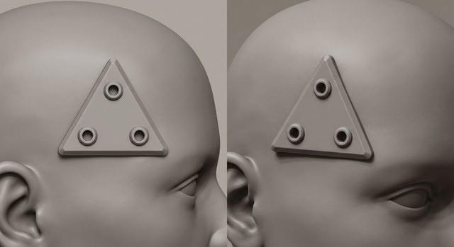
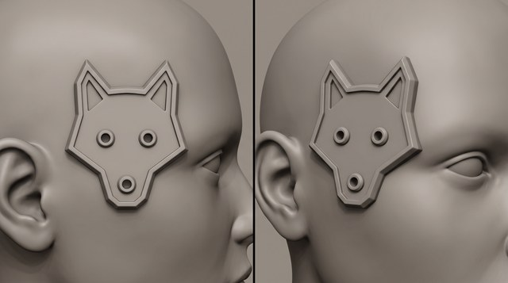
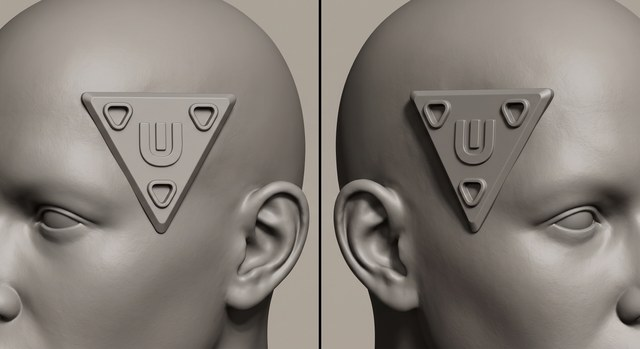

The source image(s) every generation in this round starts from. Click to zoom; open “inputs” for the prompt and reference images that produced each one.

hsocket-r1-P1-flash31

hsocket-r1-P6-flash31

hsocket-r1-P2-flash31
Round type
Concept sweep — seating / profile study
Status
Awaiting sign-off · no images generated yet
Owner
Claude (cloud) → Dimitri + Jason review
Date opened
2026-07-12
Branch
claude/head-socket-assets-6znijl
Prior round
Dimitri's r1 read — the sockets "stand out too much" (relief too proud) — sharpened into a construction: a raised rim, but the plate face at skin level or slightly dug in. r2 renders that seating so it can be judged and the field level settled by eye. (round-feedback.jsonl r1 dimitri; still preliminary, Jason not yet in.)
Goal
r1 picked the socket's *outline* (still open on the r1 panel); this round fixes how it sits against the skin. The new construction is a set-in port: a raised rim/edge always stands proud and is the highest part, while the field the three sockets sit in drops toward skin level. r2 answers Dimitri's "too proud" note and, on the incumbent triangle, tries a centre gang-emblem.
The choices on the table
Two shapes carried from r1, each rendered across three field levels — so the seating call and the emblem call can be made on one panel. Every option shares the new profile: a raised rim that is always the highest edge, with the field set lower.
1 — Field level (the headline of this round). The rim always stands proud a bit further than the field; what varies is where the field sits vs. the skin:
Field level
Looks like
Flush
at skin level
rim is the only thing proud; face flush with the skin
Recessed
~0.3–0.5 mm below skin
face dug slightly into the head — the "or maybe dug in?" option
Raised
~0.3–0.5 mm proud plateau
face slightly proud, but the rim still steps up above it
2 — Shapes (narrowed from the r1 shortlist to two, per Dimitri):
Shape
Notes
P1
equilateral triangle (incumbent)
rendered two ways: plain, and with a centre emblem
P1 + emblem
triangle + a raised "U" with an "I" inside
the mark Dimitri liked off r1's P2 roll — IP-checked, no clash found
P6
mecha-wolf (eyes + snout = the sockets)
most characterful; carried as-is
What we need from you
Pick the field level (flush / recessed / raised), whether the incumbent triangle carries the centre emblem, and — between P1 and P6 — which becomes the team mark (if the r1 panel hasn't already). Size (the other half of your r1 note) is an authoring parameter now; say if you want it dialled down too.
Cost
~$0.17/pair (flash31 + gptimage2med) × 3 shape-variants × 3 field levels = ~$1.5. Drop the emblem to one level, or cut a field level, to spend less.
Technical plan — models, prompts, commands (pipeline detail)
What changed going in (spec / prompt / process deltas)
spec.md → "Plate seating profile (r2 construction under test)": rim is always the highest level (proud of skin *and* above the field); the field is the variable — flush / recessed / raised (~0.3–0.5 mm either side of skin). Adds an optional centre emblem ("U" with an "I" inside, P1 only) with provenance (r1 hsocket-r1-P2-flash31) and the IP-check note.
Prompts rewritten around a shared SEATING/PROFILE block (prompts/r2-{P1,P1logo,P6}-{flush,recessed,raised}.txt, 9 files): the rim is pinned as the highest level in all three, and the raking panel is told to read rim > field > holes. The P1logo files add the centre-emblem line.
Shortlist narrowed to P1 + P6 (Dimitri); P4 / P5 dropped from r2, P2 dropped already. Engines stay flash31 + gptimage2med (grokq1k was the weakest on every r1 design).
Delivery is the authored STL fused per character (spec.md → "Delivery onto characters"), so this study judges the *read*; final field level/size are set at authoring. Note: a recessed field means the per-character fuse also carves a shallow pocket (union of proud rim + subtract of the recess) — a small extension of the proven over-embed-and-union; re-validate on the winner.
Experiment matrix
Two shapes (P1 rendered plain + emblem) × three field levels × two strong engines = 18 rolls. Audit each as it lands.
#
Source / base
Variant axes
Prompt
Out stem
1
neutral clay temple
P1 triangle · flush
prompts/r2-P1-flush.txt
hsocket-r2-P1-flush
2
neutral clay temple
P1 triangle · recessed
prompts/r2-P1-recessed.txt
hsocket-r2-P1-recessed
3
neutral clay temple
P1 triangle · raised
prompts/r2-P1-raised.txt
hsocket-r2-P1-raised
4
neutral clay temple
P1 + U-I emblem · flush
prompts/r2-P1logo-flush.txt
hsocket-r2-P1logo-flush
5
neutral clay temple
P1 + U-I emblem · recessed
prompts/r2-P1logo-recessed.txt
hsocket-r2-P1logo-recessed
6
neutral clay temple
P1 + U-I emblem · raised
prompts/r2-P1logo-raised.txt
hsocket-r2-P1logo-raised
7
neutral clay temple
P6 wolf · flush
prompts/r2-P6-flush.txt
hsocket-r2-P6-flush
8
neutral clay temple
P6 wolf · recessed
prompts/r2-P6-recessed.txt
hsocket-r2-P6-recessed
9
neutral clay temple
P6 wolf · raised
prompts/r2-P6-raised.txt
hsocket-r2-P6-raised
Each stem × {flash31, gptimage2med}. Cheaper trims if wanted: render the emblem (rows 4–6) at one field level only, or drop one field level across the board. For the geometric triangle the *exact* three-level comparison can also be authored from primitives and rendered from the real STL (no image credits) if the image approximation of depth isn't decisive.
Commands (run after sign-off)
Generic setup: pip install -r requirements.txt; secrets via OP_SERVICE_ACCOUNT_TOKEN → op resolves the minis-pipeline vault (preflight that op is installed — it was missing at r1 Stage-1 and cost a $0 dud sweep; installed this session via cloud/setup.sh).
H=projects/cyber-amazons/head-socket
for S in P1 P1logo P6; do
for D in flush recessed raised; do
python3 tools/compare_gen.py --prompt-file $H/prompts/r2-$S-$D.txt \
--out-dir $H/generated --out-stem hsocket-r2-$S-$D \
--variants flash31,gptimage2med --jobs 2 --lineage $H/lineage.json
done
done
Audit each roll as it lands (fresh-context crop subagent + eye), log verdicts to reviews.json, then build the review panel (tools/review_page.py --inline → claude.ai artifact) with r2-panel.json. The durable log is rounds.md.
A monochrome matte CLAY SCULPT render — smooth grey sculpting clay, soft studio light, plain neutral background. No color, no paint, no text, no labels, no watermark.
SUBJECT: an extreme close-up study of the RIGHT TEMPLE of a neutral, bald, androgynous human head sculpted in clay. Show only the temple area — the skin on the side of the forehead, in front of and above the ear. No hair.
TWO VIEWS side by side in one image:
- LEFT PANEL: a straight-on, flat-on view, camera square to the temple, so the socket's outline reads as a clean flat emblem.
- RIGHT PANEL: a raking three-quarter view of the same temple (camera ~45°, low grazing light) so the raised relief and depth read clearly — shadows show what is proud and what is recessed.
THE ASSET — a single interface socket mounted as raised hardware on the temple skin. It doubles as a gang emblem, so its outline must read as a bold, simple, recognizable mark.
- PLATE: an equilateral TRIANGLE plate, point up, sitting proud of the skin with a beveled rim and a flat top face.
- PORT: three COLLARED SOCKET-HOLES — one at each corner of the triangle. Each is a small round hole sunk into the plate top, ringed by a short raised collar (grommet). The collar is proud; the hole is recessed. NOT pins, NOT studs.
MESH-SURVIVAL CONSTRAINTS (this becomes a small 3D resin print at 32mm scale):
- The whole plate is roughly one EYE-WIDTH across — bold, not tiny.
- The plate stands clearly proud of the skin (about 1–1.5 mm), beveled rim.
- The three collared socket-holes are generously spaced so they stay separate; each collar/hole is at least 0.6 mm in its smallest dimension.
- Everything is OPAQUE MATTE CLAY — never glass, never chrome, never see-through.
- No fragile spikes, no thin needles, no fine sub-millimetre detail.
A monochrome matte CLAY SCULPT render — smooth grey sculpting clay, soft studio light, plain neutral background. No color, no paint, no text, no labels, no watermark.
SUBJECT: an extreme close-up study of the RIGHT TEMPLE of a neutral, bald, androgynous human head sculpted in clay. Show only the temple area — the skin on the side of the forehead, in front of and above the ear. No hair.
TWO VIEWS side by side in one image:
- LEFT PANEL: a straight-on, flat-on view, camera square to the temple, so the socket's outline reads as a clean flat emblem.
- RIGHT PANEL: a raking three-quarter view of the same temple (camera ~45°, low grazing light) so the raised relief and depth read clearly — shadows show what is proud and what is recessed.
THE ASSET — a single interface socket mounted as raised hardware on the temple skin. It doubles as a gang emblem, so its outline must read as a bold, simple, recognizable mark. Here the mark is a stylized MECHA-WOLF HEAD that also functions as a three-socket jack:
- PLATE: an angular, geometric CYBER/MECHA WOLF-HEAD, seen head-on — a bold stencil / gang-tag silhouette with two chunky pointed ears at the top and a blunt angular muzzle at the bottom. Faceted, mechanical, low-relief plate sitting proud of the skin with a beveled rim and a flat top face. Chunky and simple, not fine or ornate.
- PORT: the wolf's face features ARE the three COLLARED SOCKET-HOLES — the wolf's TWO EYES and its NOSE/SNOUT-TIP are each a small round hole sunk into the plate, ringed by a short raised collar (grommet). The collar is proud; the hole is recessed. So the three sockets read as the wolf's eyes and nose. NOT pins, NOT studs.
MESH-SURVIVAL CONSTRAINTS (this becomes a small 3D resin print at 32mm scale):
- The whole wolf-head plate is roughly one EYE-WIDTH across — bold, not tiny.
- The plate stands clearly proud of the skin (about 1–1.5 mm), beveled rim; the ears are thick and blunt wedges, never thin spikes.
- The three collared socket-holes (two eyes + nose) are generously spaced so they stay separate; each collar/hole is at least 0.6 mm in its smallest dimension.
- Everything is OPAQUE MATTE CLAY — never glass, never chrome, never see-through.
- No fragile spikes, no thin needles, no fine sub-millimetre detail.
A monochrome matte CLAY SCULPT render — smooth grey sculpting clay, soft studio light, plain neutral background. No color, no paint, no text, no labels, no watermark.
SUBJECT: an extreme close-up study of the RIGHT TEMPLE of a neutral, bald, androgynous human head sculpted in clay. Show only the temple area — the skin on the side of the forehead, in front of and above the ear. No hair.
TWO VIEWS side by side in one image:
- LEFT PANEL: a straight-on, flat-on view, camera square to the temple, so the socket's outline reads as a clean flat emblem.
- RIGHT PANEL: a raking three-quarter view of the same temple (camera ~45°, low grazing light) so the raised relief and depth read clearly — shadows show what is proud and what is recessed.
THE ASSET — a single interface socket mounted as raised hardware on the temple skin. It doubles as a gang emblem, so its outline must read as a bold, simple, recognizable mark.
- PLATE: an equilateral TRIANGLE plate, point up, sitting proud of the skin with a beveled rim and a flat top face.
- PORT: three ROUNDED-TRIANGLE COLLARED SOCKET-HOLES — one nested at each corner of the big triangle. Each socket-hole is itself a small ROUNDED TRIANGLE (not round), pointing the same way as the big plate, so the three echo the plate's shape — a nested-triangle motif. Each rounded-triangle hole is recessed into the plate top and ringed by a matching short raised collar. NOT pins, NOT studs.
MESH-SURVIVAL CONSTRAINTS (this becomes a small 3D resin print at 32mm scale):
- The whole plate is roughly one EYE-WIDTH across — bold, not tiny.
- The plate stands clearly proud of the skin (about 1–1.5 mm), beveled rim.
- The three rounded-triangle socket-holes are generously spaced so they stay separate; each is at least 0.6 mm in its smallest dimension, corners softened (rounded) so they survive the print.
- Everything is OPAQUE MATTE CLAY — never glass, never chrome, never see-through.
- No fragile spikes, no thin needles, no fine sub-millimetre detail.